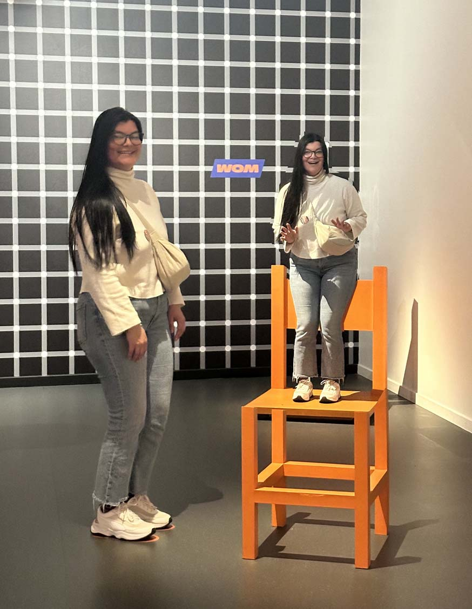
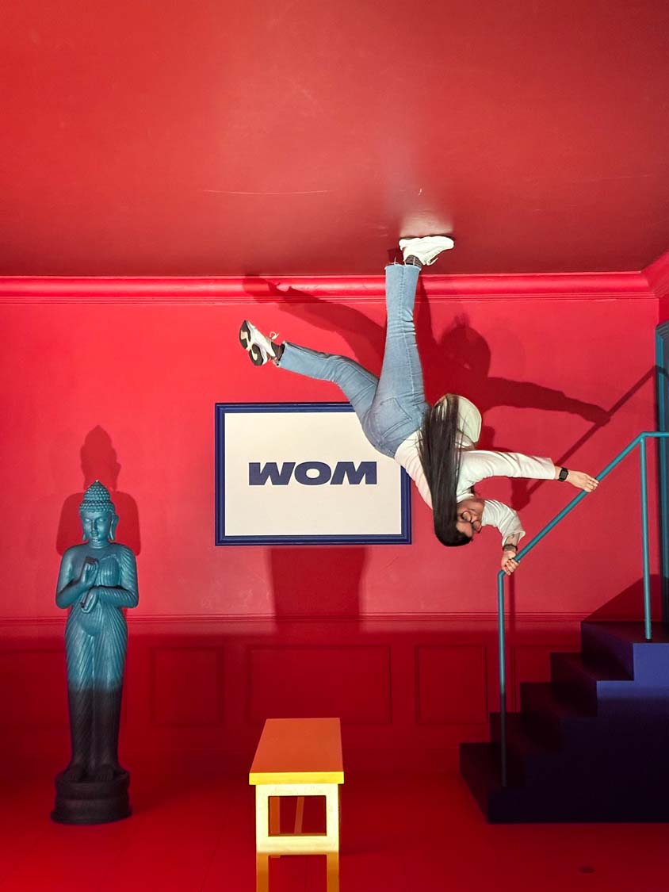

Situé à Tour & Taxis dans un espace de plus de 1 500m², le WOM “World of Mind” vous invite pour une expérience rythmée, pleine de surprises et riche en émotions dans un parcours immersif sur les perceptions et les illusions. Plus de 80 illusions visuelles, tactiles et auditives vous attendent, de quoi questionner la réalité dans un univers interactif à l’esthétique colorée.
 
Retrouvez le neurologue Steven Laureys dans les corners de science tout au long du parcours, pour en apprendre plus sur les cinq sens et le fonctionnement de notre cerveau de manière ludique et surprenante !
Infos pratiques
Rue Willy de Bruyn Straat 00, 1000 Bruxelles, Belgique
heures d'ouverture
| Lundi | 14H – 19H |
|---|---|
| Mardi | 14H – 19H |
| Mercredi | 11H – 19H |
| Jeudi | 11H – 19H |
| Vendredi | 11H – 19H |
| Samedi | 11H – 19H |
| Dimanche | 11H – 19H |